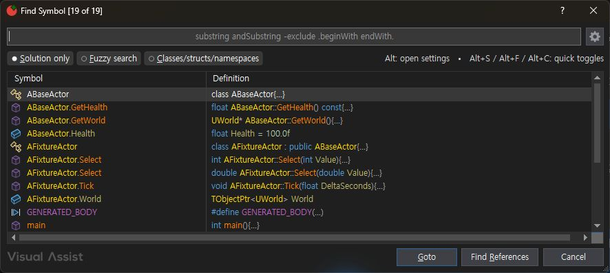
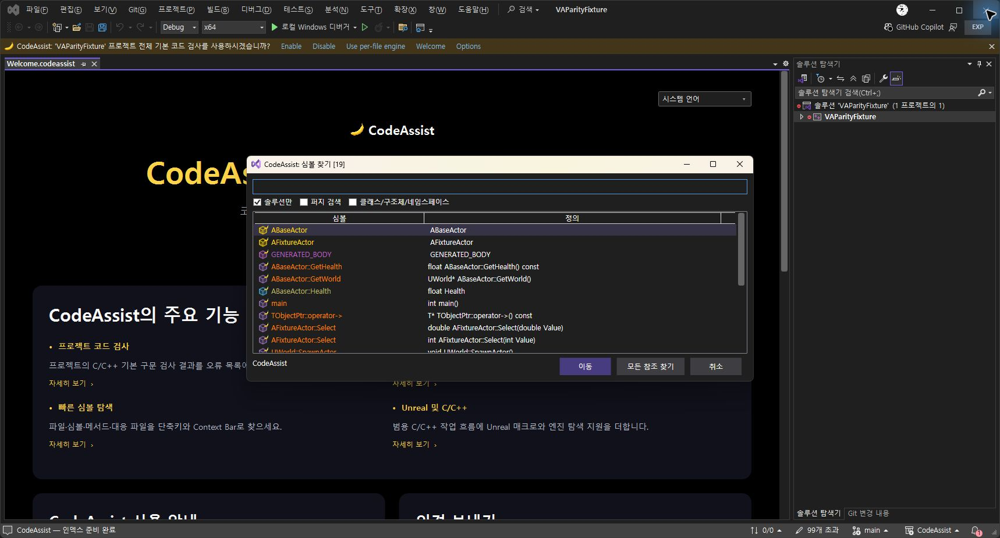
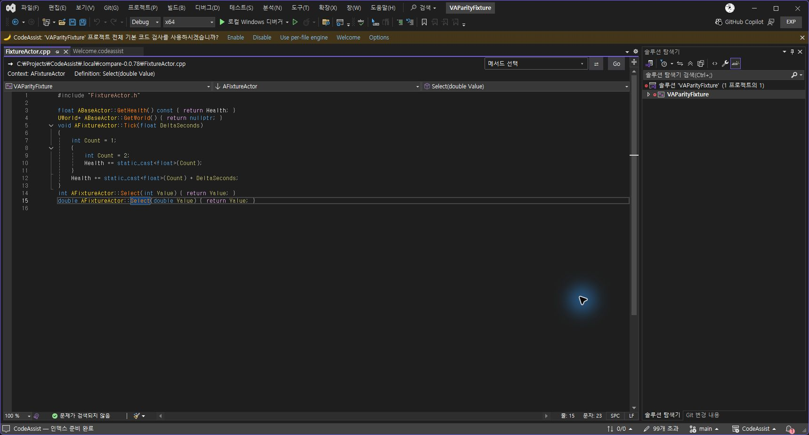

Tracefolio REPORTS & ISSUES
Tracefolio REPORTS & ISSUES실제 VA 대조 · CodeAssist 0.0.78
기존 기록 이전원문에 기록된 작업 내용과 당시 검증 범위를 정리한 보관 기록입니다.
2026-10-16 20:10부터 30분 작업 예산. VA 일반 프로필과 CodeAssist Exp 프로필을 별도 프로세스로 실행했습니다. 동일 소스의 SHA256을 확인한 별도 복사본으로 데이터베이스 잠금 충돌을 분리했습니다.
수치의 범위
기준 프로젝트 심볼 집합: 19/19 일치, 100%. 이름 표기 구분자와 operator 접두어만 정규화했으며 Select 오버로드 2개를 각각 셌습니다. 이 수치는 전체 제품 유사도가 아닙니다.
전체 원본 유사도: 미산정. 카탈로그 부분 코드 대응: 108/108. 전체 요건 검증 완료: 0/108. 메뉴 존재·코드 매핑과 모든 동작·옵션·성능 검증 완료를 구분합니다.
이번 수정
Context Bar가 현재 파일·선언 위치·소유 타입을 우선하고 불명확한 동명 오버로드를 임의 선택하지 않도록 수정했습니다.
연산자 함수, #define 매크로, 함수와 같은 줄의 필드를 인덱싱하고 캐시 포맷을 갱신했습니다.
검색에서 선언/구현 중복을 제거하되 프로젝트 심볼을 외부 엔진 동명 심볼보다 우선했습니다.
프로젝트 인덱스가 준비되기 전 빈 목록을 만들지 않으며, 엔진 전체 갱신보다 프로젝트 검색을 먼저 사용할 수 있게 했습니다.
일반 .sln/.vcxproj/문서 초기화를 추가하고 .uproject가 아닌 입력에는 Unreal 엔진 검색을 연결하지 않도록 수정했습니다. 일반 프로젝트의 실제 UI 검증은 남아 있습니다.
실행 검증
소스 회귀 테스트 251/251 통과.
직전 0.0.78 빌드의 실제 Visual Studio 편집기 통합 검사 14/14 통과: 괄호·삭제·선택 감싸기·주석·Undo/Redo·중괄호 배치. 해당 실행 당시 설치 DLL MVID 일치 확인. 최종 인라인 매개변수 제외 보정 후 MVID가 바뀌어 최종 빌드의 14개 재실행은 미완료입니다. 이 검사는 VA 대조 검사가 아닙니다.
실제 심볼 검색 19개 모두 이름·오버로드 수 대응.
Select(double) 더블클릭 → FixtureActor.cpp 15행, Context: AFixtureActor, Definition: Select(double Value) 확인.
메뉴의 CodeAssist Open File → 실제 파일 목록 3975개 확인. 최초 실행 시점의 빈 목록 해결 여부는 별도 초기 상태 재시험이 필요합니다.
VSIX 0.0.78과 Exp 설치 바이너리 6개 해시 일치, 키 바인딩 등록 24개 확인. 실제 키 충돌과 등록 개수는 별개입니다.
도구 모음 Welcome 바나나 실제 클릭 → 한국어 편집기 Welcome 탭 통과. 문서 버튼 클릭 → VS 내부의 설치본 내장 문서 통과(저장소·웹 연결 불필요). 도구 모음은 비교 프로필에서 직접 표시했습니다.
10.012초 대기 CPU 측정(논리 코어12): CodeAssist 0.650%, VA 0.000%. 짧은 대기 표본이며 입력 지연·대규모 프로젝트 성능으로 일반화하지 않습니다.
남은 차이·실패
Alt+Shift+O 실제 입력이 비교 프로필에서 VS 기본 웹 사이트 열기로 연결됐습니다. 기존 프로필 키 충돌 조사·해결이 남았습니다.
검색 정렬·표기·아이콘·문맥 반환 타입 표시는 VA와 다릅니다. 전체 옵션/토글·라이트 테마 원본 대조가 완료되지 않았습니다.
108개 전체 실행 검증, 대규모 Unreal 프로젝트 입력 지연/CPU 부하, 범용 프로젝트 실사용 검증은 미완료입니다.
이번 30분 작업으로 모든 잔여 기능 구현·검증을 완료했다고 보고하지 않습니다.
근거
정규화와 대조 원자료 · 실제 편집기 14개 결과 · VSIX 검증 · 설치 검증 · 10초 대기 CPU 측정
| VA | CodeAssist 정규화 |
|---|---|
| ABaseActor | ABaseActor |
| ABaseActor.GetHealth | ABaseActor.GetHealth |
| ABaseActor.GetWorld | ABaseActor.GetWorld |
| ABaseActor.Health | ABaseActor.Health |
| AFixtureActor | AFixtureActor |
| AFixtureActor.Select | AFixtureActor.Select |
| AFixtureActor.Select | AFixtureActor.Select |
| AFixtureActor.Tick | AFixtureActor.Tick |
| AFixtureActor.World | AFixtureActor.World |
| GENERATED_BODY | GENERATED_BODY |
| TObjectPtr | TObjectPtr |
| TObjectPtr.-> | TObjectPtr.-> |
| TObjectPtr.Value | TObjectPtr.Value |
| UCLASS | UCLASS |
| UFUNCTION | UFUNCTION |
| UPROPERTY | UPROPERTY |
| UWorld | UWorld |
| UWorld.SpawnActor | UWorld.SpawnActor |
| main | main |
실제 화면
VA 검색

CodeAssist 최종 검색

정의 이동과 문맥 표시

원문과 편집 이력
- 원문 SHA-256:
a346d04ea22fb87782ecf5d1762085d98c86f05c5310bdf7751a1adc60a699b6 - 표시 날짜는 원본 파일의 수정 시각입니다. 작업 완료 시각은 원문에 있는 값을 기준으로 확인합니다.